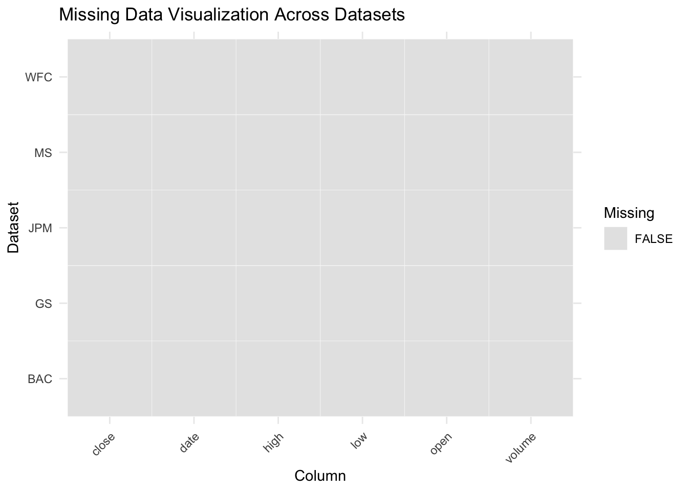
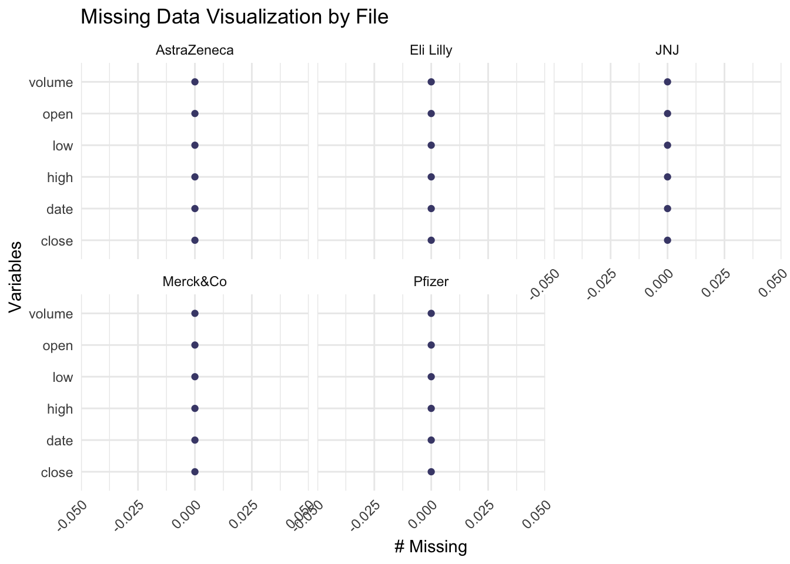

Code
library(httr)
library(jsonlite)
library(readr)For this project, we will use historical stock data for companies in three key sectors: Technology, Finance, and Healthcare. The dataset will span five years, allowing for a robust analysis of trends over time.
Nasdaq collects data through its exchange from transactions conducted by various market participants, including institutional investors, brokers, market makers, and retail traders. The data encompasses details on market activity such as trades, order books, bid/ask prices, volumes, and timestamped events.
Each trade, quote, and order is logged, providing insights into the dynamics of stock movements, liquidity, and market trends.
Market participants, including broker-dealers and investors, generate real-time and historical data through their buying and selling activities.
The data will be accessed in formats like CSV, JSON, or XML, which are compatible with analysis tools such as Python or R. The frequency of updates varies:
The data import strategy entails retrieving structured information from an API endpoint using HTTP requests that include appropriate headers to ensure successful communication. The JSON answer is processed and turned into a structured DataFrame, allowing for rapid data manipulation and analysis. Relevant data is then extracted and saved locally in a CSV file for further processing and analysis. This methodical methodology guarantees the smooth integration of raw data from an external source into a useful tabular format.
Nasdaq’s market data services will be the primary source, with potential supplementary data from financial APIs or publicly available CSV datasets.
library(httr)
library(jsonlite)
library(readr)Data fetching:
fetch_and_save_data <- function(api_url, csv_path) {
response <- GET(api_url, add_headers("User-Agent" = "Mozilla/5.0"))
if (status_code(response) == 200) {
json_content <- content(response, as = "text", encoding = "UTF-8")
parsed_data <- fromJSON(json_content, flatten = TRUE)
historical_data <- parsed_data$data$tradesTable$rows
data_frame <- as.data.frame(historical_data)
write_csv(data_frame, csv_path)
print(paste("Data successfully saved to", csv_path))
} else {
print(paste("Failed to fetch data. HTTP Status Code:", status_code(response)))
}
}###Finance Sector
Fetching data
# bank
#BAC_history_data_url <- "https://api.nasdaq.com/api/quote/BAC/historical?assetclass=stocks&fromdate=2019-11-20&limit=9999&todate=2024-11-20&random=27"
BAC_csv_path <- "./Datasets/Banking/BAC Historical Data.csv"
#fetch_and_save_data(BAC_history_data_url, BAC_csv_path)
# GS_history_data_url <- "https://api.nasdaq.com/api/quote/GS/historical?assetclass=stocks&fromdate=2019-11-20&limit=9999&todate=2024-11-20&random=26"
GS_csv_path <- "./Datasets/Banking/GS Historical Data.csv"
# fetch_and_save_data(GS_history_data_url, GS_csv_path)
# JPM_history_data_url <- "https://api.nasdaq.com/api/quote/JPM/historical?assetclass=stocks&fromdate=2019-11-20&limit=9999&todate=2024-11-20&random=29"
JPM_csv_path <- "./Datasets/Banking/JPM Historical Data.csv"
# fetch_and_save_data(JPM_history_data_url, JPM_csv_path)
# MS_history_data_url <- "https://api.nasdaq.com/api/quote/MS/historical?assetclass=stocks&fromdate=2019-11-20&limit=9999&todate=2024-11-20&random=15"
MS_csv_path <- "./Datasets/Banking/MS Historical Data.csv"
# fetch_and_save_data(MS_history_data_url, MS_csv_path)
# WFC_history_data_url <- "https://api.nasdaq.com/api/quote/MS/historical?assetclass=stocks&fromdate=2019-11-20&limit=9999&todate=2024-11-20&random=15"
WFC_csv_path <- "./Datasets/Banking/MS Historical Data.csv"
# fetch_and_save_data(WFC_history_data_url, WFC_csv_path)Reading data:
BAC <- read_csv(BAC_csv_path)Rows: 1259 Columns: 6
── Column specification ────────────────────────────────────────────────────────
Delimiter: ","
chr (5): date, close, open, high, low
num (1): volume
ℹ Use `spec()` to retrieve the full column specification for this data.
ℹ Specify the column types or set `show_col_types = FALSE` to quiet this message.GS <- read_csv(GS_csv_path)Rows: 1259 Columns: 6
── Column specification ────────────────────────────────────────────────────────
Delimiter: ","
chr (5): date, close, open, high, low
num (1): volume
ℹ Use `spec()` to retrieve the full column specification for this data.
ℹ Specify the column types or set `show_col_types = FALSE` to quiet this message.JPM <- read_csv(JPM_csv_path)Rows: 1259 Columns: 6
── Column specification ────────────────────────────────────────────────────────
Delimiter: ","
chr (5): date, close, open, high, low
num (1): volume
ℹ Use `spec()` to retrieve the full column specification for this data.
ℹ Specify the column types or set `show_col_types = FALSE` to quiet this message.MS <- read_csv(MS_csv_path)Rows: 1259 Columns: 6
── Column specification ────────────────────────────────────────────────────────
Delimiter: ","
chr (5): date, close, open, high, low
num (1): volume
ℹ Use `spec()` to retrieve the full column specification for this data.
ℹ Specify the column types or set `show_col_types = FALSE` to quiet this message.WFC <- read_csv(WFC_csv_path)Rows: 1259 Columns: 6
── Column specification ────────────────────────────────────────────────────────
Delimiter: ","
chr (5): date, close, open, high, low
num (1): volume
ℹ Use `spec()` to retrieve the full column specification for this data.
ℹ Specify the column types or set `show_col_types = FALSE` to quiet this message.Checking Null Values:
missing_values <- list(
"BAC" = colSums(is.na(BAC)),
"GS" = colSums(is.na(GS)),
"JPM" = colSums(is.na(JPM)),
"MS" = colSums(is.na(MS)),
"WFC" = colSums(is.na(WFC))
)
for (name in names(missing_values)) {
cat(paste("Missing values in", name, "dataset:\n"))
print(missing_values[[name]])
cat("\n")
}Missing values in BAC dataset:
date close volume open high low
0 0 0 0 0 0
Missing values in GS dataset:
date close volume open high low
0 0 0 0 0 0
Missing values in JPM dataset:
date close volume open high low
0 0 0 0 0 0
Missing values in MS dataset:
date close volume open high low
0 0 0 0 0 0
Missing values in WFC dataset:
date close volume open high low
0 0 0 0 0 0 Visualizing Missing Data:
library(ggplot2)
library(naniar)
library(dplyr)
Attaching package: 'dplyr'The following objects are masked from 'package:stats':
filter, lagThe following objects are masked from 'package:base':
intersect, setdiff, setequal, unionlibrary(tidyr)# List of datasets
data_list <- list(BAC = BAC, GS = GS, JPM = JPM, MS = MS, WFC = WFC)
# Generate missing value visualizations
for (name in names(data_list)) {
cat("Visualizing missing data for", name, "\n")
# Plot
print(
vis_miss(data_list[[name]]) +
ggtitle(paste("Missing Data Visualization for", name))
)
}Visualizing missing data for BAC Visualizing missing data for GS Visualizing missing data for JPM Visualizing missing data for MS Visualizing missing data for WFC 
# List of datasets
data_list <- list(BAC = BAC, GS = GS, JPM = JPM, MS = MS, WFC = WFC)
# Combine all datasets into one data frame with a 'Dataset' column indicating the dataset name
combined_data <- bind_rows(lapply(names(data_list), function(dataset_name) {
data <- data_list[[dataset_name]]
data$Dataset <- dataset_name
return(data)
}))
# Convert all columns to character type
combined_data <- combined_data |>
mutate(across(everything(), as.character))
# Pivot longer and add a column for missing data
combined_data_long <- combined_data |>
pivot_longer(cols = -Dataset, names_to = "Column", values_to = "Value") |>
mutate(Missing = is.na(Value))
# Plot the missing data across datasets
ggplot(combined_data_long, aes(x = Column, y = Dataset, fill = Missing)) +
geom_tile(color = "white") +
scale_fill_manual(values = c("TRUE" = "red", "FALSE" = "gray90")) +
theme_minimal() +
ggtitle("Missing Data Visualization Across Datasets") +
theme(axis.text.x = element_text(angle = 45, hjust = 1)) # Rotate x-axis labels for better readability
For the finance sector dataset, we have plotted two types of graphs:
A missing value heatmap for each company, which shows that there are no missing values across any column for each company. A comparative heatmap of the five companies in the finance sector, which confirms that none of the columns in any of the five datasets have missing values.
###Tech Sector
Fetching data
#AAPL_history_data_url <- "https://api.nasdaq.com/api/quote/AAPL/historical?assetclass=stocks&fromdate=2019-11-20&limit=9999&todate=2024-11-20&random=21"
AAPL_csv_path <- "./Datasets/TECH/AAPL Historical data.csv"
#fetch_and_save_data(AAPL_history_data_url, AAPL_csv_path)
#GOOG_history_data_url <- "https://api.nasdaq.com/api/quote/GOOG/historical?assetclass=stocks&fromdate=2019-11-20&limit=9999&todate=2024-11-20&random=32"
GOOG_csv_path <- "./Datasets/TECH/GOOG class C Historical data.csv"
#fetch_and_save_data(GOOG_history_data_url, GOOG_csv_path)
# META_history_data_url <- "https://api.nasdaq.com/api/quote/META/historical?assetclass=stocks&fromdate=2019-11-20&limit=9999&todate=2024-11-20&random=13"
META_csv_path <- "./Datasets/TECH/GOOG class C Historical data.csv"
# fetch_and_save_data(GOOG_history_data_url, GOOG_csv_path)
# MSFT_history_data_url <- "https://api.nasdaq.com/api/quote/META/historical?assetclass=stocks&fromdate=2019-11-20&limit=9999&todate=2024-11-20&random=13"
MSFT_csv_path <- "./Datasets/TECH/MSFT Historical data.csv"
# fetch_and_save_data(MSFT_history_data_url, MSFT_csv_path)
# NVDA_history_data_url <- "https://api.nasdaq.com/api/quote/NVDA/historical?assetclass=stocks&fromdate=2019-11-20&limit=9999&todate=2024-11-20&random=49"
NVDA_csv_path <- "./Datasets/TECH/NVDA historical data.csv"
# fetch_and_save_data(NVDA_history_data_url, NVDA_csv_path)Reading data
aapl = read_csv(AAPL_csv_path)Rows: 1259 Columns: 6
── Column specification ────────────────────────────────────────────────────────
Delimiter: ","
chr (5): date, close, open, high, low
num (1): volume
ℹ Use `spec()` to retrieve the full column specification for this data.
ℹ Specify the column types or set `show_col_types = FALSE` to quiet this message.goog = read_csv(GOOG_csv_path)Rows: 1259 Columns: 6
── Column specification ────────────────────────────────────────────────────────
Delimiter: ","
chr (5): date, close, open, high, low
num (1): volume
ℹ Use `spec()` to retrieve the full column specification for this data.
ℹ Specify the column types or set `show_col_types = FALSE` to quiet this message.meta = read_csv(META_csv_path)Rows: 1259 Columns: 6
── Column specification ────────────────────────────────────────────────────────
Delimiter: ","
chr (5): date, close, open, high, low
num (1): volume
ℹ Use `spec()` to retrieve the full column specification for this data.
ℹ Specify the column types or set `show_col_types = FALSE` to quiet this message.msft = read_csv(MSFT_csv_path)Rows: 1259 Columns: 6
── Column specification ────────────────────────────────────────────────────────
Delimiter: ","
chr (5): date, close, open, high, low
num (1): volume
ℹ Use `spec()` to retrieve the full column specification for this data.
ℹ Specify the column types or set `show_col_types = FALSE` to quiet this message.nvda = read_csv(NVDA_csv_path)Rows: 1259 Columns: 6
── Column specification ────────────────────────────────────────────────────────
Delimiter: ","
chr (5): date, close, open, high, low
num (1): volume
ℹ Use `spec()` to retrieve the full column specification for this data.
ℹ Specify the column types or set `show_col_types = FALSE` to quiet this message.#missing data
datasets <- list(
"AAPL" = aapl,
"GOOG" = goog,
"META" = meta,
"MSFT" = msft,
"NVDA" = nvda
)
for (name in names(datasets)) {
cat(paste("Missing values in", name, "dataset:\n"))
print(colSums(is.na(datasets[[name]])))
cat("\n")
}Missing values in AAPL dataset:
date close volume open high low
0 0 0 0 0 0
Missing values in GOOG dataset:
date close volume open high low
0 0 0 0 0 0
Missing values in META dataset:
date close volume open high low
0 0 0 0 0 0
Missing values in MSFT dataset:
date close volume open high low
0 0 0 0 0 0
Missing values in NVDA dataset:
date close volume open high low
0 0 0 0 0 0 #missing values visualisation
#install.packages('naniar')
#install.packages('VIM')
#library(dplyr)
#library(tidyverse)
#library(ggplot2)
#library(naniar)
# Assuming the files are named file1, file2, ..., file5
aapl$Source <- "Apple"
goog$Source <- "Google"
meta$Source <- "Meta"
msft$Source <- "Microsoft"
nvda$Source <- "Nvidia"
# Combine the datasets
all_files <- bind_rows(aapl, goog, meta, msft, nvda)
# Reshape data for visualization
# Create a missingness indicator for each column
all_files <- all_files |>
mutate(across(-Source, as.character))
# Pivot the data
missing_long <- all_files |>
pivot_longer(cols = -Source, names_to = "Variable", values_to = "Value") |>
mutate(Missing = is.na(Value))
library(ggplot2)
ggplot(missing_long, aes(x = Variable, y = Source, fill = Missing)) +
geom_tile(color = "white") +
scale_fill_manual(
values = c("TRUE" = "red", "FALSE" = "blue"),
labels = c("TRUE" = "Missing", "FALSE" = "Not Missing")
) +
theme_minimal() +
labs(
title = "Missing Data Across Files",
x = "Variables",
y = "Files",
fill = "Missing?"
) +
theme(axis.text.x = element_text(angle = 90, hjust = 1))There are 2 of types visualizations we have done to depict the missing values in the data.One using regular ggplot and the other using the naniar package.As seen from the graphs, there are no missing values.This trend can be attributed to the fact that all stocks have a price and they are updated accordingly. To deal with historical data, NASDAQ would probably use multiple techniques like archival techniques and curation processes etc. Another widely known fact is that financial data is almost always very clean.
###Healthcare and Pharma Sector
Fetch Data:
# JNJ_history_data_url <- "https://api.nasdaq.com/api/quote/JNJ/historical?assetclass=stocks&fromdate=2019-11-20&limit=9999&todate=2024-11-20&random=45"
JNJ_csv_path <- "./Datasets/Healthcare and Pharma/JNJ Historical data.csv"
# fetch_and_save_data(JNJ_history_data_url, JNJ_csv_path)
#
#
# AZN_history_data_url <- "https://api.nasdaq.com/api/quote/AZN/historical?assetclass=stocks&fromdate=2019-11-20&limit=9999&todate=2024-11-20&random=20"
AZN_csv_path <- "./Datasets/Healthcare and Pharma/AZN Historical data.csv"
# fetch_and_save_data(AZN_history_data_url, AZN_csv_path)
#
#
# LLY_history_data_url <- "https://api.nasdaq.com/api/quote/LLY/historical?assetclass=stocks&fromdate=2019-11-20&limit=9999&todate=2024-11-20&random=22"
LLY_csv_path <- "./Datasets/Healthcare and Pharma/LLY Historical data.csv"
# fetch_and_save_data(LLY_history_data_url, LLY_csv_path)
#
# MRK_history_data_url <- "https://api.nasdaq.com/api/quote/MRK/historical?assetclass=stocks&fromdate=2019-11-20&limit=9999&todate=2024-11-20&random=33"
MRK_csv_path <- "./Datasets/Healthcare and Pharma/MRK Historical data.csv"
# fetch_and_save_data(MRK_history_data_url, MRK_csv_path)
#
# PFE_history_data_url <- "https://api.nasdaq.com/api/quote/PFE/historical?assetclass=stocks&fromdate=2019-11-20&limit=9999&todate=2024-11-20&random=49"
PFE_csv_path <- "./Datasets/Healthcare and Pharma/PFE Historical data.csv"
# fetch_and_save_data(PFE_history_data_url, PFE_csv_path)Reading Data:
# Reading the datasets using relative paths
jnj = read_csv(JNJ_csv_path)Rows: 1259 Columns: 6
── Column specification ────────────────────────────────────────────────────────
Delimiter: ","
chr (5): date, close, open, high, low
num (1): volume
ℹ Use `spec()` to retrieve the full column specification for this data.
ℹ Specify the column types or set `show_col_types = FALSE` to quiet this message.azn = read_csv(AZN_csv_path)Rows: 1259 Columns: 6
── Column specification ────────────────────────────────────────────────────────
Delimiter: ","
chr (5): date, close, open, high, low
num (1): volume
ℹ Use `spec()` to retrieve the full column specification for this data.
ℹ Specify the column types or set `show_col_types = FALSE` to quiet this message.lly = read_csv(LLY_csv_path)Rows: 1259 Columns: 6
── Column specification ────────────────────────────────────────────────────────
Delimiter: ","
chr (5): date, close, open, high, low
num (1): volume
ℹ Use `spec()` to retrieve the full column specification for this data.
ℹ Specify the column types or set `show_col_types = FALSE` to quiet this message.mrk = read_csv(MRK_csv_path)Rows: 1259 Columns: 6
── Column specification ────────────────────────────────────────────────────────
Delimiter: ","
chr (5): date, close, open, high, low
num (1): volume
ℹ Use `spec()` to retrieve the full column specification for this data.
ℹ Specify the column types or set `show_col_types = FALSE` to quiet this message.pfe = read_csv(PFE_csv_path)Rows: 1259 Columns: 6
── Column specification ────────────────────────────────────────────────────────
Delimiter: ","
chr (5): date, close, open, high, low
num (1): volume
ℹ Use `spec()` to retrieve the full column specification for this data.
ℹ Specify the column types or set `show_col_types = FALSE` to quiet this message.pharma_datasets <- list(
"JNJ" = jnj,
"AZN" = azn,
"LLY" = lly,
"MRK" = mrk,
"PFE" = pfe
)
for (name in names(pharma_datasets)) {
cat(paste("Missing values in", name, "dataset:\n"))
print(colSums(is.na(pharma_datasets[[name]])))
cat("\n")
}Missing values in JNJ dataset:
date close volume open high low
0 0 0 0 0 0
Missing values in AZN dataset:
date close volume open high low
0 0 0 0 0 0
Missing values in LLY dataset:
date close volume open high low
0 0 0 0 0 0
Missing values in MRK dataset:
date close volume open high low
0 0 0 0 0 0
Missing values in PFE dataset:
date close volume open high low
0 0 0 0 0 0 Missing Values Visualisation
# Assuming the files are named file1, file2, ..., file5
jnj$Source <- "JNJ"
azn$Source <- "AstraZeneca"
lly$Source <- "Eli Lilly"
mrk$Source <- "Merck&Co"
pfe$Source <- "Pfizer"
# Combine the datasets
all_files_health <- bind_rows(jnj, azn, lly, mrk, pfe)
# Reshape data for visualization
# Create a missingness indicator for each column
all_files_health <- all_files_health |>
mutate(across(-Source, as.character))
# Pivot the data
missing_long <- all_files_health |>
pivot_longer(cols = -Source, names_to = "Variable", values_to = "Value") |>
mutate(Missing = is.na(Value))
library(ggplot2)
library(naniar)
gg_miss_var(all_files_health, facet = Source) +
theme(axis.text.x = element_text(angle = 45, hjust = 1)) +
labs(title = "Missing Data Visualization by File")
We have used naniar package to visualise missing data. The x-axis shows the proportion of data missing in the dataset and here since its 0, it means there are no missing values. The reason why has been explained above.
There are 3 of types visualizations we have done to depict the missing values in the data. Two using regular ggplot and the other using the naniar package. As seen from the graphs, there are no missing values.This trend can be attributed to the fact that all stocks have a price and they are updated accordingly. To deal with historical data, NASDAQ would probably use multiple techniques like archival techniques and curation processes etc. Another widely known fact is that financial data is almost always very clean.